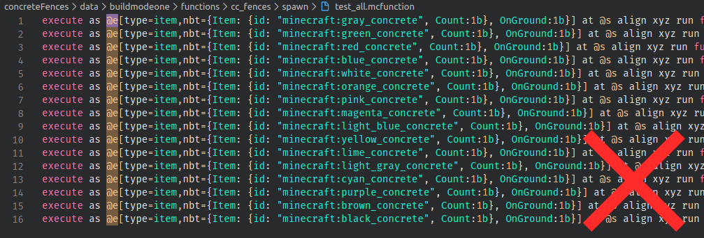
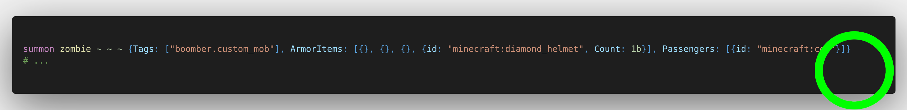

Global Ignoring Tag (***)
This convention can be split into two sides: Entity Selection and Entity Creation.
- Entity Selection refers to using global ignoring tag inside entity selectors such as
@eand@a. - Entity Creation refers to using global ignoring tag when summoning or creating an entity, such as
/summon.
- Verify entity selector

This function did not take
global.ignoretag into account when querying for these entities.

Player (
@a) is still affected by global ignoring tag and this should ignoreglobal.ignoretag properly.
- Verify entity creation

This is a valid place to not use global ignoring tag since this is a temporary entity that is killed off right away.

This is a valid place to not use global ignoring tag since this is a custom mob entity that should be able to be manipulated by other datapacks. Such as receiving damage or being push away.

This is a "chunk marker" entity that shouldn't be move or kill by other datapack, so this entity must have
global.ignore,global.ignore.posandglobal.ignore.kill
Note
Since Global Ignoring Tag convention is an opt-in system if the datapacker insist that their entity shouldn't have global ignoring tag. They will still pass. There is no such exception in the Entity Selection part, however.